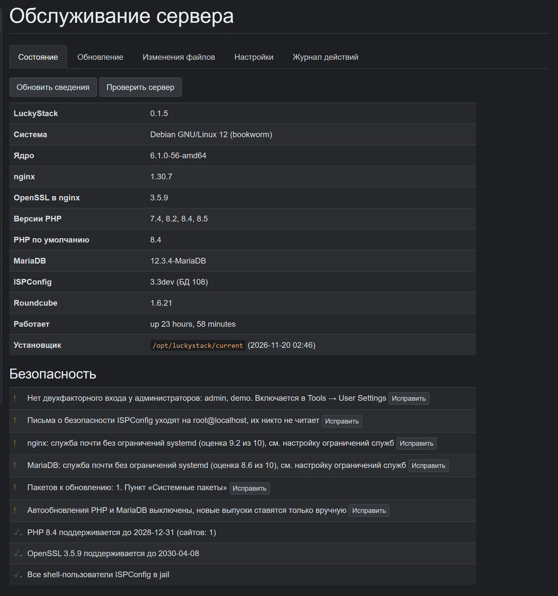
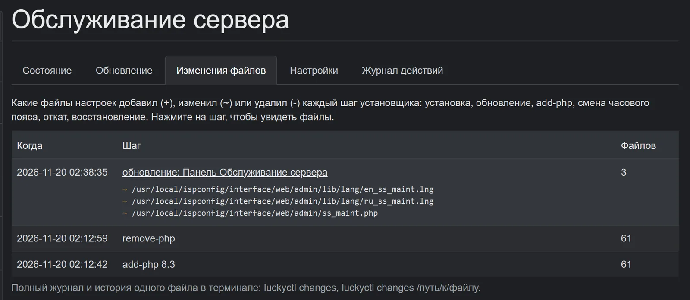
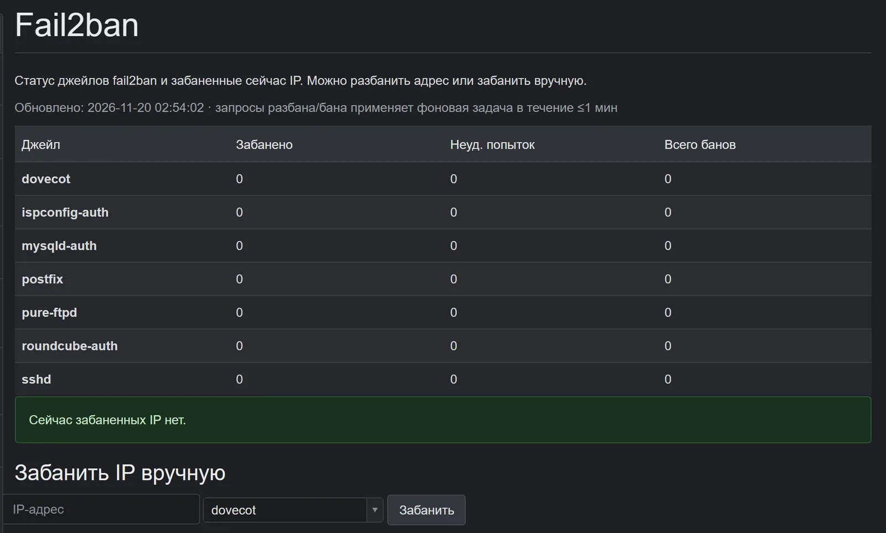
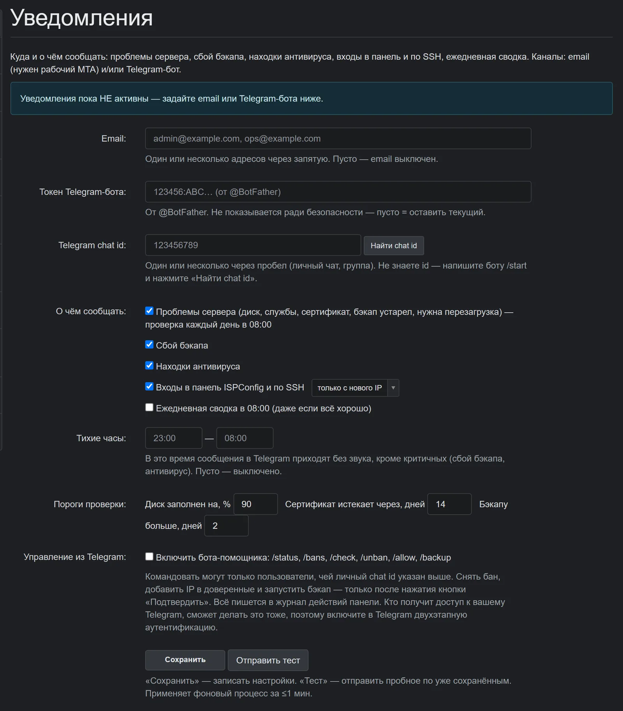

LuckyStack
A ready web and mail server on nginx, PHP and ISPConfig. A wizard installs it on a clean Debian or Ubuntu, and after that you maintain it from the panel or with the luckyctl command.
curl -fsSL https://raw.githubusercontent.com/Leden4ik/ LuckyStack/ main/ get.sh | sudo bash
Source code and releases: github.com/Leden4ik/LuckyStack
ISPConfig is a good panel, but once it is installed the server is still far from ready. nginx from the packages has no HTTP/3 or Brotli, mail accepts plain text passwords, the firewall is not set up, there is no backup, and a panel update wipes out manual changes. LuckyStack takes care of all of that: it builds nginx, installs several PHP versions, mail with spam filtering, protection, backups and notifications, and adds an Add-ons menu group to ISPConfig where you can see all of this and maintain it.
I made it for my own servers and I test it on them too. Every change goes through a test server first and only then reaches the production one. On every code push GitHub checks the scripts with ShellCheck, runs the tests, checks the PHP syntax of the panels and looks for passwords that got in by accident. Before a release, end-to-end tests create a client on the test server with a site, a database, a mailbox and a DNS zone, and check the site, mail, DNS, backup with restore, and notifications. A release is made with a single script and only from what passed the checks.
You can get through it by just pressing Enter: the server name, SSH port and profile are filled in for you. A failure at one stage does not ruin the install, you can continue it.
Versions, checks, updates, rollback, backups, bans and notifications are in ISPConfig.
A backup before the core update, our changes are applied again after it, and nginx and webmail roll back with one command.
What you get on the server
| Part | What is installed | Source |
|---|---|---|
| Web server | nginx with HTTP/3, Brotli, zstd and OpenSSL 3.5 LTS. Full Apache support will come in one of the next releases | built from source |
| PHP | Several FPM versions at once, from 7.4 to 8.6, the version is chosen per site | Sury |
| Databases | MariaDB latest LTS, Redis. PostgreSQL if you want it | mariadb.org |
| Postfix and Dovecot, Rspamd and ClamAV, Roundcube webmail, DKIM, SPF and DMARC | apt / roundcube.net | |
| Panel | ISPConfig 3.3 and the Add-ons group: 10 menu items of our own | ispconfig.org |
| Protection | CrowdSec with ufw, fail2ban, hardening of SSH, the kernel and PHP, malware scanning | apt |
| Certificates | Let's Encrypt for sites, the panel and mail, renewed automatically | acme.sh |
| Maintenance | Daily backup, notifications by email and Telegram, checks of server health, security fixes and mail reputation, a log of file changes | own scripts |
About the languageLuckyStack started in Russian. The ISPConfig panels have English labels, and the console has a partial English translation (luckyctl --lang en). Terminal examples on this page show the Russian output as it really looks. Full English in the console is on the roadmap.
Quick start
From an empty server to a working panel. Building nginx takes the longest, the rest is installed from packages.
- Pick a server name
Choose a full name, for example
server.example.com, and create an A record pointing to the server IP at your registrar. The panel will open at this name, the certificate is issued for it and mail is sent from it. To check that the record already works:# on your own computer dig +short server.example.com 203.0.113.10
- Log in to the server over SSH with a key
The wizard will offer to turn off password login, so it is better to put the key there beforehand. If you have no key, create one with
ssh-keygen -t ed25519and copy it to the server withssh-copy-id root@203.0.113.10. - Run the installer
curl -fsSL https://raw.githubusercontent.com/
Leden4ik/ LuckyStack/ main/ get.sh | sudo bash The command downloads the latest release, checks its signature and checksum and starts the wizard. If the signature does not match, nothing is installed. You can read the script first: get.sh. Without it, you download the code like this:
curl -L https://github.com/Leden4ik/LuckyStack/archive/refs/heads/main.tar.gz | tar xz, then runbash server-setup.shin the unpacked folder. On the first run the installer copies itself to/opt/luckystack, installs theluckyctlcommand and from then on runs from there, so you can delete the downloaded folder. - Answer the wizard's questions
Almost everywhere you can just press Enter, the default value suits most people. Each question is covered in detail in the Setup wizard section.
- Open the panel
At the end the wizard shows the panel address and the admin password, and saves a copy of the credentials to
/root/server-access.txt. The panel opens at the server name, the port is chosen in the wizard, 8080 by default:https://server.example.com:8080
If you changed SSH or turned on the firewall, the wizard will ask you to confirm that you have not lost access to the server: open a second window, log in over SSH and run
touch /run/luckystack-net-ok. Without confirmation, after 5 minutes SSH and the firewall go back to their previous settings on their own.First of all, turn on two-factor login for admin and look at the Add-ons section: it shows that the server is in good shape.
- Check the server
luckyctl check
It should pass without errors. Warnings are normal on a fresh server, for example about having no backup copy on another server, or about the PTR reverse record if the hosting provider has not set it yet. What the output looks like is shown in the luckyctl check section.
Requirements
You need a clean server: a fresh OS install, with no panels and no sites. The wizard will not run on a server that is already in use, there is a separate adopt mode for that.
| What | Minimum | Notes |
|---|---|---|
| OS | Debian 12 or 13, Ubuntu 22.04 or 24.04 | All four are tested with a clean install, a reboot, sites, mail and a restore from backup |
| Memory | 2 GB | With ClamAV, 4 GB is better. On low memory the wizard itself will offer swap or skipping ClamAV |
| Disk | 20 GB | Plus space for sites, mail and backups |
| Network | public IPv4 | IPv6 is picked up automatically if the server has a global address and a route |
| Port 25 | open at the hosting provider | Only needed if you install mail. Many hosting providers block it by default, check in advance |
| Access | root | sudo works too |
Setup wizard
The wizard asks its questions in order, writes the answers to a settings file and only then starts installing. Nothing on the server changes until the final confirmation.
The very first question is the language: Russian or English. The choice is saved in setup.conf (the UI_LANG key), and from then on every luckyctl command speaks it. The ISPConfig panels follow the language of the ISPConfig user, which is set in the panel itself.
What a question looks like
Each question is a box with options. The default option is in square brackets, Enter picks it.
┌─ Какую версию nginx собирать ────────────────────────────────────────────────┐ │ 1) stable — проверенная стабильная (рекомендуется) │ │ 2) mainline — новее, свежие возможности (чуть менее обкатана) │ └──────────────────────────────────────────────────────────────────────────────┘ Ваш выбор [1]: 1 ┌─ Какой OpenSSL собирать с nginx ─────────────────────────────────────────────┐ │ 1) 3.5 LTS — поддержка до апреля 2030 (рекомендуется) │ │ 2) 4.1 — самая новая, поддержка до ноября 2027 │ │ 3) 4.0 — поддержка до мая 2027 │ └──────────────────────────────────────────────────────────────────────────────┘ Ваш выбор [1]: ▍
Real wizard output on the test server.
What it will ask
Questions come in groups. If a part isn't selected, the questions about it are skipped.
| Question | Default | What to pick |
|---|---|---|
| Server name and time zone | from the system | The full name with an A record. If the hosting provider already set a name, the wizard fills it in for you. The time zone is set everywhere at once: system, PHP, MariaDB, ISPConfig |
| Install profile | Web + mail | Minimal, Web + mail, Full or Custom. A profile just pre-selects components, you can adjust them |
| Which nginx version to build | stable | mainline is newer, but rarely needed |
| nginx feature set | Recommended | HTTP/3, Brotli, zstd and speedups. Full adds traffic statistics, Custom lets you pick modules by hand |
| Which OpenSSL to build | 3.5 LTS | 3.5 is supported until 2030, the best choice for a server you don't want to touch |
| PHP versions | 8.3 and the system version | You can select several, and which one is the default. You can add another one later with luckyctl add-php |
| Server components | per profile | Mail, antispam, DNS, FTP, phpMyAdmin, PostgreSQL, Node.js |
| Attack protection | CrowdSec + ufw | CrowdSec with shared attacker lists plus ufw with ports closed by default |
| Panel port | 8080 | Any free port. The panel opens only by the server name, by bare IP it is closed |
| Panel access by IP | empty | Your own static IPs separated by spaces. Empty means the panel is open to everyone, which you shouldn't do |
| SSH port | current | Enter keeps the port SSH is running on now. If you change it, the switch happens at the very end, with protection against losing access |
| ISPConfig version | nightly | A fresh build that installs reliably on new PHP. Stable is the official release, on new PHP its auto-installer sometimes doesn't finish |
| Where to install Roundcube from | from the developers' site, branch 1.7 | This way you get a fresh version, and it can be rolled back. Branch 1.6 no longer gets fixes. From Debian packages it's older, but it updates along with the system |
| Backup and notifications | backup at 03:30 | Directory, how many days to keep, email and Telegram for notifications |
Summary before installing
After the questions the wizard saves the answers to /etc/luckystack/setup.conf, shows a summary and asks whether to start the installation. If you answer no, nothing changes on the server: run luckyctl install again and fix the answer you need.
Stages
The installation runs in stages. Each finished stage is marked, so after a failure you can continue from where it stopped.
| Stage | Type | What it does |
|---|---|---|
| preflight | always | Hostname, time, /etc/hosts, base packages, swap when memory is short |
| database | always | MariaDB and Redis. An existing root password is not reset |
| webserver | always | Building nginx from source |
| php | always | PHP-FPM of the selected versions, OPcache, safe settings |
| nodejs | optional | Node.js LTS: 24 by default, 26 or 22 if you prefer |
| phpmyadmin | optional | phpMyAdmin or Adminer, access only by the server name and an IP list |
| postgresql | optional | PostgreSQL alongside MariaDB |
| optional | Postfix and Dovecot, login only over TLS | |
| rspamd | optional | Rspamd and ClamAV |
| dns | optional | BIND9 and a zone template with SPF, DMARC and CAA |
| ftp | optional | PureFTPd, encrypted only |
| ssl | always | Let's Encrypt client |
| security | optional | Firewall, fail2ban, SSH and kernel hardening, automatic security updates |
| monit | optional | Monit, restarts services that went down |
| webmail | optional | Roundcube |
| ispconfig | always | The ISPConfig panel and the Add-ons group |
| hostcert | optional | A real certificate for the server name, for the panel and mail |
| rcplugins | optional | Roundcube plugins: password change, autoreply, filters right from the mailbox |
| maildeliver | optional | TLS for outgoing mail and hints on DNS records |
| mailsni | optional | Each domain gets its own mail certificate |
| tuning | optional | Tuning MariaDB, PHP and Postfix to the memory and CPU |
| backup | optional | Daily backup of databases and configs |
| malware | optional | rkhunter and a malware scanner that sends an email when it finds something |
If a stage fails
The wizard tells you which stage it stopped at and where to look at the log. Fix the cause and continue:
luckyctl install --resume # continue from the first unfinished stage luckyctl install --only php # run exactly one stage luckyctl install --from security # start from a stage and go to the end
If the nginx build keeps failing, a clean build without leftovers from previous attempts helps: luckyctl install --clean-build --only webserver.
Unattended install
If you have several servers, it's handy to write the answers to a file once. First install the code without the wizard using bash server-setup.sh --install-code, then put setup.conf in /etc/luckystack/ (mode 600) and run the installation with the --unattended flag. Anything missing from the file takes the default, passwords are generated and saved to the same file.
# /etc/luckystack/setup.conf SERVER_FQDN='server.example.com' TIMEZONE='Europe/Moscow' WEBSERVER='nginx' NGINX_CHANNEL='stable' OPENSSL_BRANCH='3.5' PHP_VERSIONS='8.2 8.4 8.5' PHP_DEFAULT='8.4' FIREWALL='crowdsec' CROWDSEC_WITH_UFW='y' SSH_PORT='2222' SSH_ALLOW_IPS='198.51.100.7 198.51.100.8' ISPCONFIG_ADMIN_IPS='198.51.100.7 198.51.100.8' ISPCONFIG_PANEL_PORT='3333' BACKUP_TIME='03:30' BACKUP_RETENTION_DAYS='14' NOTIFY_EMAIL='admin@example.org'
luckyctl install --unattended
The full list of settings is in the setup.conf settings section.
The luckyctl command
Everything you do with the server from the console is done with one command. You can call it from any directory, and help for any subcommand opens with luckyctl help <command>.
Without a command, luckyctl opens the main menu with the same actions.
Any command can be run once in the other language, the --lang key goes anywhere: luckyctl check --lang en.
| Command | What it does |
|---|---|
| install | The setup wizard. With --resume, --only, --from, --unattended, --reconfigure, --force, --dry-run, --clean-build |
| status | What is installed, which versions and what is waiting for an update |
| check | Health check: services, ports, certificates, backups, security, security fixes and mail reputation |
| cve | Whether security fixes are out for nginx, OpenSSL in the nginx build, PHP and Roundcube, whether Rspamd, MariaDB and CrowdSec have newer versions, and whether a PHP version or the Roundcube branch has reached end of support |
| blacklist | Mail reputation: the PTR reverse record of the external IP, the IP itself in the Spamhaus ZEN, SpamCop, PSBL and Mailspike blacklists, mail domains in Spamhaus DBL |
| sites | How every ISPConfig site responds over https and http, plus the panel, Roundcube and phpMyAdmin, and what changed since the last check |
| changes | Which config files each installer step added, changed or deleted. changes 5 shows the last 5 steps, changes /etc/nginx/nginx.conf the history of one file |
| log 100 | The last lines of the installer log |
| paths | Where the code, settings, state and log are |
| update | Update packages and reapply our settings. The kernel only after confirmation |
| rollback nginx | Bring back the previous nginx build. Running it again undoes the rollback |
| rollback roundcube | Bring back the previous Roundcube version together with the database schema |
| rollback luckystack | Bring back the previous release of LuckyStack itself |
| backup | Make a backup now, backup list shows the snapshots |
| restore | Restore from a snapshot: databases, configs, sites, mail |
| add-php 8.6 | Add a PHP version, it shows up in the sites' list right away |
| remove-php 8.3 | Remove a PHP version. It won't let you remove one that has sites on it, including sites on the default PHP |
| fix-world-writable | Remove write access for everyone from files in /etc, /usr/local and /var/www. The old permissions are saved, to bring them back: fix-world-writable --revert FILE |
| timezone Europe/Moscow | Change the time zone everywhere: system, PHP, MariaDB, ISPConfig, cron |
| adopt | Add backup, notifications and protection to a server that was set up by hand |
| diagnostics | Collect an archive for troubleshooting, without passwords and keys |
| uninstall | Remove components. Data stays, with --purge it is removed too |
| self-update | Install the latest LuckyStack release from GitHub. It installs only if the signature and checksum match, the previous release stays for a rollback |
| version | Which version is installed, where it came from, whether there is a newer one and what changed in it |
luckyctl status
Shows what is installed on the server. Handy before an update and when you need to quickly answer which PHP version is the default.
════════════════════════════════════════════════════════════════════════════════ Состояние системы — установленные компоненты и версии ════════════════════════════════════════════════════════════════════════════════ ┌─ ОС ─────────────────────────────────────────────────────────────────────────┐ │ Debian GNU/Linux 12 (bookworm) │ └──────────────────────────────────────────────────────────────────────────────┘ ┌─ Веб-сервер ─────────────────────────────────────────────────────────────────┐ │ nginx: 1.30.8 · active │ └──────────────────────────────────────────────────────────────────────────────┘ ┌─ PHP ────────────────────────────────────────────────────────────────────────┐ │ php7.4: PHP 7.4.33 · active │ │ php8.2: PHP 8.2.35 · active │ │ php8.4: PHP 8.4.27 · active │ │ php8.5: PHP 8.5.12 · active │ │ default php → PHP 8.4.27 │ └──────────────────────────────────────────────────────────────────────────────┘ ┌─ Базы данных ────────────────────────────────────────────────────────────────┐ │ MariaDB: 12.3.3-MariaDB · active │ │ Redis: 7.0.15 · active │ └──────────────────────────────────────────────────────────────────────────────┘ ┌─ Почта / антиспам ───────────────────────────────────────────────────────────┐ │ Postfix: 3.7.11 · active │ │ Dovecot: 2.3.19.1 · active │ │ Rspamd: 4.2.3 · active │ │ ClamAV: 1.4.6 · active │ └──────────────────────────────────────────────────────────────────────────────┘ ┌─ Безопасность ───────────────────────────────────────────────────────────────┐ │ CrowdSec: v1.8.2 · active │ │ UFW: active │ │ fail2ban: 2 · active │ └──────────────────────────────────────────────────────────────────────────────┘ ┌─ Обновления ─────────────────────────────────────────────────────────────────┐ │ Пакетов apt к обновлению: 0 │ │ ISPConfig: 3.3dev (nightly) → есть сборка от 2026-11-07 │ └──────────────────────────────────────────────────────────────────────────────┘
Shortened: the blocks with services and database admin tools are removed.
luckyctl check
Checks the server item by item and writes a summary at the end. ✓ means all is well, ! is worth a look, ✗ means something is broken, i is for your information and does not count in the summary. Besides services, ports, certificates and backups, it has the sections Security fixes (the same as luckyctl cve) and Mail reputation (the same as luckyctl blacklist, if mail is installed). The same check runs in the background every six hours, and when a new problem shows up, you get a notification. Security fixes and blacklists are reported by the monitor once a day.
════════════════════════════════════════════════════════════════════════════════ Проверка здоровья сервера ════════════════════════════════════════════════════════════════════════════════ ┌─ Сервисы ────────────────────────────────────────────────────────────────────┐ │ ✓ nginx (nginx): active │ │ ✓ MariaDB (mariadb): active │ │ ✓ PHP-FPM 8.4 (php8.4-fpm): active │ │ ✓ Postfix (postfix): active │ │ ✓ CrowdSec (crowdsec): active │ │ ✓ конфигурация nginx валидна (nginx -t) │ └──────────────────────────────────────────────────────────────────────────────┘ ┌─ Сетевые порты (LISTEN) ─────────────────────────────────────────────────────┐ │ ✓ порт 443 (web) слушается │ │ ✓ HTTP/3: nginx слушает UDP/443 (QUIC) │ │ ✓ HTTP/3: UDP/443 открыт в ufw │ │ ✓ чувствительные сервисы (БД/кэш) не торчат наружу (только localhost) │ └──────────────────────────────────────────────────────────────────────────────┘ ┌─ TLS-сертификаты ────────────────────────────────────────────────────────────┐ │ ✓ панель ISPConfig: валиден (87 дн.) (Let's Encrypt) │ │ ✓ LE server.example.com: валиден (87 дн.) │ └──────────────────────────────────────────────────────────────────────────────┘ ┌─ Исправления безопасности ───────────────────────────────────────────────────┐ │ ✓ nginx 1.30.8: известных уязвимостей нет (nginx.org) │ │ ✓ OpenSSL в nginx 3.5.9: последний в ветке 3.5 │ │ ✓ PHP 8.4.28: последняя версия │ │ ✓ Roundcube 1.7.7: последняя версия ветки 1.7 │ │ ✓ Rspamd 4.3.1: последняя версия в репозитории │ └──────────────────────────────────────────────────────────────────────────────┘ ┌─ Репутация почты ────────────────────────────────────────────────────────────┐ │ ✓ PTR 203.0.113.10 → server.example.com │ │ ✓ IP 203.0.113.10 не в чёрных списках (4 проверено) │ │ ✓ почтовые домены не в Spamhaus DBL (3) │ └──────────────────────────────────────────────────────────────────────────────┘ ┌─ Безопасность и бэкапы ──────────────────────────────────────────────────────┐ │ ✓ ufw включён и переживёт перезагрузку │ │ ! SSH: вход по паролю разрешён (надёжнее только по ключу) │ │ ✓ серверный бэкап (БД и конфиги) по расписанию │ │ ! бэкапы только на этом диске, копии вне сервера нет │ │ ! почта (/var/vmail) в бэкап не входит │ └──────────────────────────────────────────────────────────────────────────────┘ ┌─ Итог ───────────────────────────────────────────────────────────────────────┐ │ OK: 43 ВНИМАНИЕ: 5 ОШИБКА: 0 │ └──────────────────────────────────────────────────────────────────────────────┘ [!] Есть предупреждения (5) — посмотрите пункты с !.
Shortened: only some of the 48 items are shown. The exit code is 0 if there are no errors, so you can call the command from your own monitoring.
luckyctl cve and luckyctl blacklist
luckyctl cve checks whether security fixes and new versions are out for what is installed on the server. nginx is checked against the vulnerability list on nginx.org, OpenSSL inside nginx against the latest release of its branch, PHP against the package repository and php.net, Roundcube against its releases on GitHub. For Rspamd, MariaDB and CrowdSec it checks whether their repositories have a newer version. If something is out, the command tells you what to update with: luckyctl update nginx, luckyctl update pkgs or luckyctl update security.
A new PHP package build without security fixes is shown as a note, not a warning: the check reads its changelog. For old PHP branches such as 7.4 it takes into account that the Sury repository backports fixes from newer versions, and says when that last happened. If the Roundcube branch no longer gets fixes, like 1.6 since November 2026, it warns you to move to 1.7. The check goes online once a day and uses the saved answer the rest of the time.
luckyctl blacklist checks mail reputation: whether the external IP has a PTR reverse record and the name points back to it, whether the IP is in the Spamhaus ZEN, SpamCop, PSBL and Mailspike lists, whether any mail domains are in Spamhaus DBL. Spamhaus doesn't answer through public DNS like 1.1.1.1, so the queries go through the local BIND. If the DNS server wasn't installed, this part of the check is skipped.
Both checks are part of luckyctl check and the panel, and the daily monitor sends a notification when it finds something new.
luckyctl cve # fixes and new versions of server software luckyctl blacklist # PTR and blacklists
luckyctl sites
Shows how every active ISPConfig site responds over https and http, plus the panel, Roundcube and phpMyAdmin. Requests go to this same server by site name, so DNS and an external firewall don't affect the result. At the end the command shows what changed since the last check, so it is handy to run before and after your own changes. The exit code is 1 if some address doesn't respond or returns a 5xx error. The same check runs by itself on every update, see Updates.
luckyctl sites # how sites respond and what changed
luckyctl changes
Every install and update step, as well as add-php, remove-php, time zone change, rollback, restore and adopt, records which config files it added (+), changed (~) or deleted (-). It watches /etc, ISPConfig files, /usr/local/sbin, /usr/local/bin, Roundcube settings and plugins, and crontab. A file rewritten with the same content doesn't count as a change. The log is kept since version 0.1.5 and lives in /var/log/luckystack/changes.log.
luckyctl changes # last 10 steps luckyctl changes 5 # last 5 steps luckyctl changes /etc/nginx/nginx.conf # history of one file
The Add-ons panel
Everything LuckyStack adds to ISPConfig is collected in one menu group. The native ISPConfig items stay where they are, so you can always see what is mine and what comes out of the box. The group lives in a separate menu directory, so an ISPConfig update does not wipe it.
Path: System›Add-ons
Versions, checks, security fixes and mail reputation, updating item by item, rollback, the file change log and nginx build settings. More on this below.
Mail and Telegram, which events to send, quiet hours, a button to send a test message.
The list of snapshots, a backup at the push of a button and restoring the part you pick: databases, configs, sites, mail.
Which ports are open to which addresses. Replaces the native ISPConfig Firewall, which can only open a port to everyone.
Block an address or a whole subnet, with a comment on why.
Addresses that are never banned by CrowdSec or fail2ban. Your office, your monitoring.
Who is banned right now, for what and from where, and lifting a ban with one button.
Jail status, the list of bans, unbanning.
Versions, updating Composer, checking site dependencies for known vulnerabilities.
A checkbox in the site form. Manual edits to the nginx config will not be lost when ISPConfig regenerates the site.
Server maintenance
The main page of the group. Five tabs: Status, Update, File changes, Settings and Action log.
Besides versions and checks, the Status tab has a Security fixes and mail reputation block. It shows the same thing as luckyctl cve and luckyctl blacklist, with explanations and a link to the Spamhaus request form. The block is refreshed together with the server check. The panel does not send separate alerts about it, so it does not duplicate the daily monitor.
The Security block has fix buttons next to the warnings. "Remove write-for-all" takes write access for everyone off the files found in /etc, /usr/local and /var/www, the old permissions are saved in /root/luckystack-backups and can be restored from the console. "Jail: name" is shown for every shell user without a jail and moves that user into a jail through ISPConfig after a confirmation. Before you press it, look at what files and users these are: if a user's script needs the whole system, it will stop working in a jail.
The File changes tab shows the last 20 installer steps: which config files each of them added, changed or removed. The full log and the history of a single file are in the console: luckyctl changes.




On the Settings tab you change the nginx and OpenSSL branch, the build modules, hardening and the address for ISPConfig security emails. Saving only records the setting, it is applied on the next update. The Action log shows who did what, when and from which IP in all the panels of the group.
The screenshots were taken on a test server, names, domains and addresses are replaced with sample ones.
How the panel changes the server
The ISPConfig panel itself does not run as root and does not change anything on the server. When you press a button, the panel writes a job to a table. Within a minute a service script running as root picks it up and does only what is on its short list of allowed actions.
- Before running the installer, the script checks that its files are owned by root and nobody else can change them. Otherwise the job is rejected.
- If the installer is already running, a second job does not start.
- A backup is made before updating nginx or ISPConfig. If it fails, the update does not start.
- Each job writes its own log, which you can see in the panel, and the result arrives in notifications.
Vhost freeze
ISPConfig keeps the site config on its side and overwrites the file in /etc/nginx/sites-available every time the site is saved. If you edited the config by hand, your edits are lost. The Do not regenerate vhost checkbox in the site form fixes this: after regeneration your version is put back in place.
Path: Sites›Website›Options›Do not regenerate vhost
If you change the PHP version of a frozen site, LuckyStack fixes the PHP-FPM address in your config itself, even if the connection changed from a socket to a port. If the address in the config was written by hand and does not look like the standard one, a warning appears in the panel and the config stays as it is.
Updates
Updating from the panel and with the luckyctl update command follows the same path. By default packages and my settings are updated, the core is not touched. After an update from the console the panel refreshes its data and checks within a couple of minutes.
Only if the core is selected. If the backup fails, the update does not start.
The nginx build, the ISPConfig updater. The new nginx checks your config first.
Everything the ISPConfig updater overwrote is applied again.
The result goes to Telegram and email, the log is in the panel.
What is always updated
- System packages through apt.
- Automatic security updates, sysctl, fail2ban, config permissions.
- ISPConfig templates: HTTP/2, TLS 1.3 and HTTP/3 for the panel and sites.
- Access restriction by IP: the panel only by server name, phpMyAdmin only from your own addresses.
- All panels of the Add-ons group and registration of PHP versions in ISPConfig.
- PHP metapackages such as php-mysql are pinned to their PHP branch, so apt full-upgrade doesn't pull in a whole new PHP branch.
Each item can be run as many times as you like. If everything is already in place, it says so and touches nothing.
Checking sites before and after
Before the first step, the update records how the panel, Roundcube, phpMyAdmin and every ISPConfig site respond over https and http, and after all steps it asks them again. If an address stopped responding, or returns a 5xx error or a 4xx instead of a page, this goes into the update summary as an error: into the job log in the panel and into the notification. Such addresses are rechecked several times, because services may still be restarting. If nginx was rebuilt this time and the update runs from the console, the check offers to bring back the previous build right away. Addresses that were already down before the update don't count as errors. To turn the check off: UPDATE_SITECHECK=n. luckyctl sites does the same by hand.
The core only on request
Rebuilding nginx and updating ISPConfig happen only if you ticked them in the panel or confirmed them in the console. The MariaDB root password and the main service configs are not touched during an update.
luckyctl update # asks what to update luckyctl update --dry-run # show the plan without changing anything luckyctl update pkgs security # only these items, no questions luckyctl update nginx ispconfig # update the core without questions
Items: pkgs, security, confcustom, tuning, mail, certs, rcplugins, backup, notify, nginx, ispconfig.
Sample update log
Режим обновления / патчей [i] Ядро — nginx (пересборка) и ISPConfig (офиц. апдейтер) — обновляется ТОЛЬКО по явному запросу. [i] Пароль root MariaDB и базовые конфиги служб НЕ трогаются. [→] Обновление: Модернизация vhost панели/apps (http2/http3) [i] vhost панели/apps уже современны (http2 on; + TLSv1.3) — изменений нет. [i] UFW: UDP для QUIC/HTTP3 — панель 3333 только с 198.51.100.7 198.51.100.8, apps 3331 всем. [→] Обновление: Регистрация версий PHP в ISPConfig [✓] Версии PHP в ISPConfig: добавлено 0, синхронизировано 4. [→] Обновление: Расширение firewall ISPConfig (IP-ограничения портов) [i] В панель Firewall засеяно правил-источников: 5 (SSH/панель/MySQL). Существующие не тронуты. [✓] Firewall ISPConfig расширен: модуль «Firewall IP-rules» (отдельные поля) + плагин (before.rules). [→] Обновление: Заморозка vhost (галочка «Не обновлять vhost») [✓] Заморозка vhost развёрнута: галочка у сайта + плагин (restore frozen-vhost после регенерации). [→] Обновление: Панель CrowdSec (активные баны + снятие) [✓] Панель CrowdSec развёрнута (меню «Дополнения» → CrowdSec; кэш решений + очередь снятия + cron). [→] Обновление: Composer (глобально) [i] Composer уже установлен: Composer version 2.11.1 2026-10-30 14:52:10 ...
A real job log from the panel, shortened. [→] start of a step, [✓] done, [i] note, [!] warning, [✗] error.
Updating LuckyStack itself
The LuckyStack code is updated separately from the server. luckyctl version shows which version is installed, whether there is a newer one and what changed in it, and luckyctl self-update installs it.
Every release is signed. The GitHub release has the archive, a SHA256SUMS file with the checksum and a signature for it. Before installing, the server checks the signature with the key from the version already installed, using ssh-keygen, which is on any server. Then it checks the archive checksum and that the version inside matches the release number. If anything does not match, the update stops and nothing changes.
The new version is installed next to the old one, and you can go back with luckyctl rollback luckystack. The server settings do not change in the process, anything new that concerns the server itself is applied by luckyctl update. What changed in each version is written in the changelog.
luckyctl version # what is installed and whether there is a newer one luckyctl self-update # install the latest release luckyctl rollback luckystack # go back to the previous one
SELF_UPDATE_REF=v0.1.5 SELF_UPDATE_ALLOW_UNSIGNED=y luckyctl self-update.Rollback
With every nginx and Roundcube update the previous version is kept alongside. You can bring it back with a button on the Update tab or with a command. Rolling back again returns the new version.
nginx
The previous build is kept as /usr/sbin/nginx.backup. Before the swap it checks your current config, and if it does not accept it, the rollback is cancelled and nginx stays as it was.
[→] Откат nginx: nginx/1.30.8 OpenSSL 3.5.9 → nginx/1.30.8 OpenSSL 4.1.0 [✓] nginx: откат выполнен, работает nginx/1.30.8 OpenSSL 4.1.0. Прошлая сборка теперь nginx/1.30.8 OpenSSL 3.5.9
Roundcube
Before the webmail update, the previous directory, the schema and a dump of its database are saved. If the new version changed the schema, the database is restored from the dump on rollback. If the login page does not open after the rollback, everything goes back to the new version on its own.
[→] Откат Roundcube 1.7.7 → 1.6.22 [✓] Roundcube: откат на 1.6.22 выполнен. Следующий --update снова предложит новую версию этой ветки.
LuckyStack
Releases of LuckyStack itself live in /opt/luckystack/releases, the last three are kept. luckyctl rollback luckystack switches the active release to the previous one, running it again switches back. Settings and stage markers are stored separately and are not touched.
ISPConfig and databases
ISPConfig has no second copy alongside, so a full backup of databases and configs is made before updating it. You can go back through a restore from the snapshot taken before the update.
Security
Things people usually turn on after the first break-in are on here from the start. Below, part by part, is what exactly and why.
Network and firewall
- ufw closes all ports except the ones the chosen services need. SSH and the panel can be opened only to your own IPs.
- CrowdSec reads nginx, SSH and mail logs, bans password brute force and scanners and gets a shared list of attackers.
- fail2ban additionally watches SSH, mail, FTP, the ISPConfig panel, Roundcube and MariaDB logins.
- Addresses from the Trusted IPs list are never banned, so you do not lock yourself out by accident.
- To avoid losing the server when editing SSH or the firewall, risky changes roll back on their own if you do not confirm within a few minutes that you still have access.



Access
- The panel opens only by the server name. A request by IP gets an empty response, so scanners do not see that ISPConfig is here.
- On 443, a connection by IP or by someone else's name is dropped before the certificate, so it cannot reveal which sites are on the server. On 80 by IP you can choose: the server start page, a redirect to its name or an empty response.
- SSH: key-only login (optional), no port or agent forwarding, a custom port.
- Mail and FTP accept a password only over TLS.
PHP and sites
- The PHP version is not shown in headers, session cookies are not accessible from JavaScript.
- Each site has its own OPcache, one site cannot read another site's code from the cache.
- ISPConfig shell users are locked in a jail, and a check in the panel reminds you if they are not and moves them into a jail with a button.
- World-writable site files are found during the check and fixed with a button, the old permissions can be brought back.
- Once a day sites are scanned for malicious code, and if something is found you get an email.
Kernel and services
- sysctl: protection against route spoofing, SYN flood and kernel address leaks.
- Short nginx timeouts against slow attacks: 15 seconds for headers, 60 for the body and sending.
- Optional systemd restrictions for nginx and MariaDB: a read-only system, a separate /tmp, no extra kernel privileges. With them the systemd-analyze security score is 4.9 for nginx and 5.7 for MariaDB, lower is better. If a service does not start with the restrictions, they are removed on their own.
- Encryption: TLS 1.2 and 1.3, X25519MLKEM768 key exchange, resistant to quantum computers, when the browser supports it.
Fixes and mail reputation
- Once a day the server checks nginx against the nginx.org vulnerability list, the OpenSSL in the nginx build against the latest release of its branch, and PHP against the package repository and php.net. If a fix is out, you get a notification with the command to update.
- PHP versions that are no longer supported show up in the check, so you can move sites in time.
- The same check looks at whether the IP has a PTR reverse record and whether the IP or mail domains ended up on blacklists. Without this, mail silently goes to spam or does not arrive.
- LuckyStack releases are signed, installation and self-update only install what passed the signature check.
Backups
Every night a snapshot is taken: a dump of all databases, /etc and the ISPConfig configs. Optionally the snapshot includes sites and mail. Old snapshots are deleted by age, but the last three always stay.
Where and how often
| Setting | Default | Comment |
|---|---|---|
| BACKUP_DIR | /var/backups/server | A separate directory. System directories, /var/www and /var/vmail cannot be chosen, this protects against accidental deletion |
| BACKUP_TIME | 03:30 | Start time |
| BACKUP_RETENTION_DAYS | 7 | How many days to keep |
| BACKUP_INCLUDE_WWW | n | Include site files |
| BACKUP_INCLUDE_MAIL | n | Include mailboxes. The wizard suggests turning it on: mail is usually small, and it is the most painful thing to lose |
| ISPC_SITE_BACKUPS | asks | Daily site backups by ISPConfig itself (Sites → site → Backup). Asked during an update, the default answer is no. If turned off on purpose (n), the check shows it as a note |
| BACKUP_REMOTE_TYPE | none | A copy on another server: rsync over SSH or rclone to S3, B2 and SFTP |
Commands
luckyctl backup # take a snapshot now luckyctl backup list # list snapshots luckyctl restore # pick a snapshot and what to restore
The backup itself is done by the /usr/local/sbin/server-backup.sh script. It works without LuckyStack too, which is handy when restoring on a new server.
Restoring
By default only databases from the latest snapshot are restored. Everything else is chosen explicitly:
server-backup.sh --restore 20261107-033000 --db --etc server-backup.sh --restore --all --yes
Restoring overwrites the current data. Take a fresh snapshot before it, in case you picked the wrong one. Site files are restored together with the protection ISPConfig puts on their directories, you do not need to remove anything by hand.

Notifications and the bot
The server tells you itself when something needs attention. Channels: email and Telegram, or both. You set it up in the panel: System›Add-ons›Notifications.

What you get messages about
| Event | When |
|---|---|
| monitor | A new problem showed up in the health check, the disk is full, a certificate expires soon, there has been no backup for a long time, a panel job finished. Also once a day at 08:00: security fixes came out for nginx, OpenSSL or PHP, the server IP or a mail domain got on a blacklist. You get a message about the same thing only once |
| backup | A backup failed |
| malware | The scanner found a suspicious file |
| login | A login to the panel or over SSH. By default only from an address nobody has logged in from for 180 days |
| digest | A daily summary at 08:00, even if everything is fine |
You get a message about a new problem once, not on every check. During quiet hours, for example from 23:00 to 08:00, Telegram messages arrive silently, except critical ones: a failed backup, an antivirus find.
Messages come in the server language, the one chosen in the wizard. In the notifications panel you can change it separately: the Notification language field, Russian or English. The Telegram bot replies only in Russian for now.
Telegram bot
If you turn the bot on, you can send it commands. It only answers chats from the list in the settings. Actions that change something have to be confirmed with a button under the message, and each one goes into the panel log.
| Command | What it does |
|---|---|
| /status | Load, disk, memory, which services are down, when the last backup was |
| /bans | Who is banned right now in CrowdSec and fail2ban |
| /check 203.0.113.5 | Where the address is banned and why |
| /unban 203.0.113.5 | Remove the ban from an address |
| /allow 203.0.113.5 4 | Add the address to trusted for 4 hours so it doesn't get banned. Without a number it's for a day, 0 means forever |
| /backup | Make a backup now |
| /help | List of commands |
ExampleMessage texts as in the bot code, the numbers are made up.
setup.conf settings
All the wizard's answers are kept in one file. You can edit it by hand, changes are picked up on the next update. Below are the most useful keys, the full list with explanations is in DOCUMENTATION.md.
Server
| Key | Values | What it sets |
|---|---|---|
| SERVER_FQDN | name | Full server name |
| TIMEZONE | Europe/Moscow | Time zone for everything |
| UI_LANG | ru / en | Language of the console and notifications |
| SERVER_HAS_IPV6 | y / n | Detected automatically, you only need to set it to turn IPv6 off |
| TUNE_SWAP | y / n | Create a swap file on a server with little memory |
Web and PHP
| Key | Values | What it sets |
|---|---|---|
| WEBSERVER | nginx / apache | Web server |
| NGINX_CHANNEL | stable / mainline | Which nginx branch to build |
| NGINX_AUTO_VERSION | y / n | Take the latest version of the branch or the pinned one |
| OPENSSL_BRANCH | 3.5 / 4.1 / 4.0 | OpenSSL branch for nginx, 3.5 LTS by default |
| NGX_BROTLI, NGX_ZSTD | y / n | Brotli and zstd compression |
| NGX_QUIC_RETRY | y / n | Client address validation for HTTP/3, protects against address spoofing |
| NGX_TIGHT_TIMEOUTS | y / n | Short client timeouts |
| HTTP_IP_POLICY | landing / redirect / deny | What to serve on port 80 for the IP or a foreign name: a landing page, a redirect to the server name, or nothing |
| PHP_DEFAULT | 8.3 | Default PHP version for new sites and service pages |
| PHP_CLI_DEFAULT | same as PHP_DEFAULT | What runs as the php command in the console and cron |
| NODEJS_VERSION | 24 / 26 / 22 | Node.js version, if Node.js is selected |
Databases and mail
| Key | Values | What it sets |
|---|---|---|
| MARIADB_SOURCE | official / debian | MariaDB from its own repository or from Debian |
| MARIADB_AUTO_VERSION | y / n | Latest LTS or the pinned version |
| INSTALL_CLAMAV | y / n | Antivirus for mail, needs about 1.5 GB of memory |
| RC_SOURCE | upstream / debian | Where to install Roundcube from |
| RC_BRANCH | 1.7 / 1.6 | Roundcube branch. 1.7 by default, 1.6 no longer gets fixes. Switch here or in the panel, then run luckyctl update security |
Access and security
| Key | Values | What it sets |
|---|---|---|
| FIREWALL | crowdsec / ufw / none | What to protect the server with |
| CROWDSEC_WITH_UFW | y / n | ufw with closed ports together with CrowdSec |
| SSH_PORT | number | SSH port |
| SSH_ALLOW_IPS | space-separated IPs | Which addresses are allowed in over SSH, empty means all |
| SSH_HARDEN | y / n | Key-only login |
| ISPCONFIG_ADMIN_IPS | space-separated IPs | Which addresses can open the panel |
| ISPCONFIG_PANEL_PORT | number | Panel port |
| PANEL_FQDN_ONLY | y / n | Panel only by name, not by IP |
| FTP_TLS_REQUIRED | y / n | FTP only with encryption |
| SEC_SERVICE_HARDEN | y / n | systemd restrictions for nginx and MariaDB |
| SEC_AUTO_UPDATES_3RD | y / n | Automatic security updates, also from third-party repositories |
Backup and notifications
| Key | Values | What it sets |
|---|---|---|
| BACKUP_* | see Backups | Directory, time, retention, what to include, offsite copy |
| NOTIFY_EMAIL | comma-separated addresses | Where to send emails |
| NOTIFY_TG_TOKEN | token | Telegram bot token |
| NOTIFY_TG_CHATS | space-separated ids | Chats to send to and to accept commands from |
| NOTIFY_QUIET | 23:00-08:00 | Quiet hours |
Files and logs
Code, settings, state and logs are kept separately. That's why a LuckyStack update replaces the code and doesn't touch your settings.
To see where everything is on a particular server, run luckyctl paths.
Logs
| File | What's in it |
|---|---|
| /var/log/luckystack/setup.log | Detailed log of installs and updates. Passwords in it are masked. Quick look at the tail: luckyctl log |
| /var/log/luckystack/panel/job-N.log | Log of a panel job, N is the job number on the Update tab |
| /var/log/luckystack/changes.log | Which config files each installer step changed. Easier to read with luckyctl changes |
| /var/backups/server/backup.log | Log of all backup runs |
| /var/log/server-tg-bot.log | Telegram bot log |
| /var/log/nginx/ | nginx logs, sites have their own in /var/log/ispconfig/httpd/ |
| journalctl -u crowdsec | What CrowdSec bans and why |
Troubleshooting
The install stopped at one of the stages
Look at the last lines of the log, there will be a line with [✗] and the reason:
grep -n '\[✗\]' /var/log/luckystack/setup.log | tail -5
Common causes: the source archive didn't download (network or mirror), memory ran out during the build, the hosting provider blocks port 25. After fixing it, run luckyctl install --resume, completed stages won't be repeated.
The panel doesn't open
Check three things in order:
- You're opening it by the server name, not by IP. By IP the panel serves nothing.
- Your current IP is in the access list. If your address changed, add it in the Firewall IP-rules panel from another address on the list, or from the server:
ufw allow from 203.0.113.5 to any port 8080 proto tcp(use your port from the wizard). - The address isn't banned:
cscli decisions list | grep 203.0.113.5. To remove the ban:cscli decisions delete --ip 203.0.113.5.
Sites don't open after an nginx update
First check the config with nginx -t. If the error is in the config, it will be in the output. If the config is fine and the problem is in the new build, go back to the previous one: luckyctl rollback nginx. The rollback takes seconds and checks by itself that the previous build accepts your config.
A panel job says "installer is already running"
That means an update is already going: from the console or another job. Wait for it to finish. If you're sure nothing is running, check cat /run/luckystack-update.pid and whether that process exists. After a reboot this file goes away by itself.
A job says "unsafe permissions or owner"
The panel refuses to run the installer if someone other than root can change its files. Usually this comes from copying over FTP or unpacking as a user other than root. To fix:
chown -R root:root /opt/luckystack chmod -R go-w /opt/luckystack
self-update says the release failed verification
That means the signature or checksum of the downloaded archive didn't match the key already on the server. In that case the update stops and changes nothing on the server. Try again later. If it keeps happening, write in issues, don't install such an archive bypassing the check.
If the command says the release has no signed archive, it's a release older than 0.1.6. It can only be installed without verification: SELF_UPDATE_REF=v0.1.5 SELF_UPDATE_ALLOW_UNSIGNED=y luckyctl self-update.
Notifications don't arrive
Press Test on the Notifications page. If it came to Telegram but not to email, look at the mail queue with mailq and in the Spam folder. For delivery to outside mailboxes the sender's domain needs DKIM and SPF, you can turn them on in ISPConfig for the mail domain.
Need help
Collect a diagnostics archive. It has versions, service status, settings and log tails, with passwords and tokens cut out of them:
luckyctl diagnostics
You can attach the archive to an issue in the GitHub repository.
Questions
Can I install it on a server that already has sites?
The wizard is meant for a clean server and will stop if it finds a working install. For a server built by hand following the Perfect Server guide there is luckyctl adopt: first a backup, then a confirmation, and only the backup, notifications and security get installed. Your nginx, templates and ISPConfig configs are left alone.
Why is nginx built from source?
The packaged nginx in Debian comes without HTTP/3 and Brotli and with an old OpenSSL. The build gives you a fresh nginx, OpenSSL with long-term support and only the modules you need. Updating it is no harder than a package: one checkbox in the panel, and the previous build stays around for rollback.
Won't an ISPConfig update wipe your changes?
The ISPConfig updater does overwrite some files. That's why LuckyStack applies its changes again after it, and the Add-ons menu lives in a separate directory the updater doesn't touch.
How is this different from the ISPConfig Autoinstaller?
The Autoinstaller installs ISPConfig and packages from repositories, after that the server is yours. LuckyStack installs the nginx build, security and backups, and more importantly it stays with the server after that: it updates, rolls back, checks and reports problems.
Where are passwords stored?
In setup.conf, readable only by root. Passwords aren't written to logs, they get masked on write.
Can I remove LuckyStack and keep the server?
Yes. All services are ordinary: nginx, PHP-FPM, MariaDB, ISPConfig. If you remove LuckyStack, the server keeps working, you only lose our panels, scheduled backups and notifications.
What's next
The current version is 0.1.12. Since the first release I've added one-command install with signature verification, signed releases, checking sites before and after an update, the luckyctl cve, blacklist, sites and changes commands, PHP 8.6, Roundcube 1.7, English in the console and notifications, fix buttons in the panel, checks on GitHub, scheduled end-to-end tests on a test server and an English version of this site. Next up:
- Full Apache support: the same security, tuning and add-ons as nginx has.
- A copy of backups on a second server that can't be deleted from the main one.
- English replies from the Telegram bot.